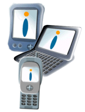

|
| |

Welcome to the Symbian Developer Library, the complete developer guide and reference for Symbian OS.
This edition is aimed at application developers programming for v6.1. It documents the APIs and technologies common to all v6.1 based Symbian OS phones.
The Developer Library is continuously evolving and improving. Register with Symbian's Developer Network to receive regular information and updates.
Copyright ©2002 Symbian Ltd. 6.1-00174 |
|